的系数是 1。这样的假设不失一般性。更一般的形式是
的系数是 1。这样的假设不失一般性。更一般的形式是 中世纪之后，代数学的第一次伟大进步 是给出了三次方程的一般解法，紧接着就是四次方程的一般解法。我将在第 4 章用 16 世纪的观点来讲述这段历史。我在这里只是对基础的代数内容进行简短的说明，用以阐明这个话题及其困难之处。
搞清楚我们求解的是什么很重要。对于三次方程或者任意次方程，求出达到要求精度的近似数值 解不是一件很困难的事情，有时你甚至能猜出一个正确的解。画图通常可以得到很接近的解。古希腊人、古阿拉伯人和中国人都掌握了很多复杂的算术和几何方法。中世纪的欧洲数学家也熟悉这些方法，他们能够很准确地计算出一个三次方程的实数数值解。
他们没有得到真正的代数 解，即求解三次方程的一般公式，就好比第 1 章的注释中给出的二次方程求解公式。近代数学家想找到这种一般形式的公式，只有找到这样的公式才能认为三次方程是可解的。
※※※
这是含有一个未知量的三次方程的一般形式 1 ：
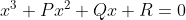
。首先，我们可以通过一个简单的代换去掉包含 的项：
的项：
1
注意，这里假设
的系数是 1。这样的假设不失一般性。更一般的形式是
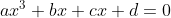
。 可以是 0 或其他数。如果
是 0，这个方程就不是三次方程；如果
不是 0，方程的两端可以除以
，把
的系数简化成 1。
可以是 0 或其他数。如果
是 0，这个方程就不是三次方程；如果
不是 0，方程的两端可以除以
，把
的系数简化成 1。
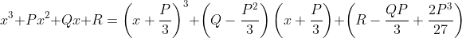
换一种形式就是
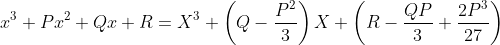
其中
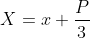
。所以，只需要借助一个简单的代换就可以将任意的三次方程转化成不包含
项的方程，如果能求出这个较简单的方程中的 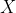
，那么用 减去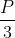
就得到 。这种不包含
项的三次方程被称为缺项三次方程
2
。
。这种不包含
项的三次方程被称为缺项三次方程
2
。
2 现在更常见的说法是“既约三次方程”。我更喜欢这个老说法。
综上，我们只需考虑下面的缺项三次方程：
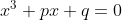
※※※
到此为止一切顺利，但是缺项三次方程的一般求解公式是什么呢？回想一下一般的二次方程

它有两个解
和
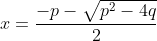
因为负数没有实数平方根，所以如果
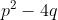
是负数，那么上面两个解就是复数；如果 正好等于 0，那么上面两个解相等，因此从数值的观点来看，这个方程只有一个解；当然，如果 是正数，那么这个方程就有两个实数解。所有这些情形都可以用二次函数的图像来说明。如果我们画出
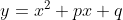
的图像，那么这个二次方程的解就使得 ，即这条曲线与横轴的交点。我在上面总结的三种情况——无实数解、只有一个实数解及有两个实数解，分别如图 CQ-1、图 CQ-2 和图 CQ-3 所示。
，即这条曲线与横轴的交点。我在上面总结的三种情况——无实数解、只有一个实数解及有两个实数解，分别如图 CQ-1、图 CQ-2 和图 CQ-3 所示。
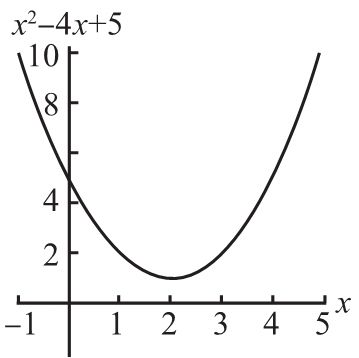
图 CQ-1
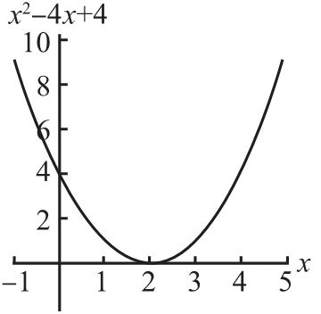
图 CQ-2
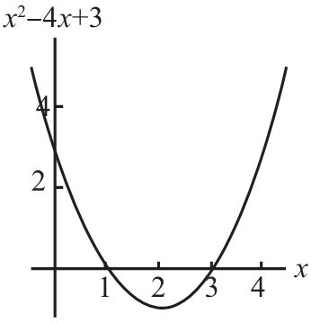
图 CQ-3
为了搞清楚求解三次方程的一般公式，我们可以从图像出发。此时有三种基本情形，如图 CQ-4、图 CQ-5 和图 CQ-6 所示。注意，图中的三次曲线都是从第三象限开始，到达第一象限。这是因为，当
非常大的时候（正的或者负的），
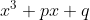
中的
项“盖过”了其他项。对于“足够大”（“足够大”的尺度取决于  和
和  的大小）的
值，
就像
一样。根据符号法则，负数的立方是负数，正数的立方是正数，所以三次多项式曲线总是从第三象限走向第一象限。因为这条曲线必然与横轴相交于某个
位置，所以
至少有一个
实数解。
的大小）的
值，
就像
一样。根据符号法则，负数的立方是负数，正数的立方是正数，所以三次多项式曲线总是从第三象限走向第一象限。因为这条曲线必然与横轴相交于某个
位置，所以
至少有一个
实数解。
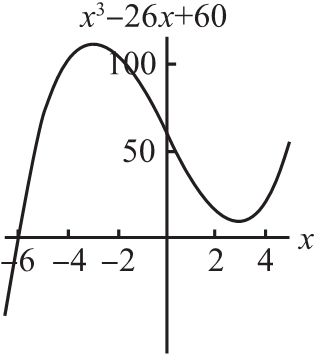
图 CQ-4
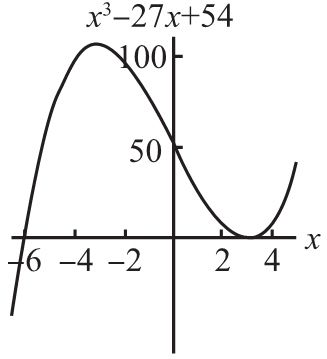
图 CQ-5
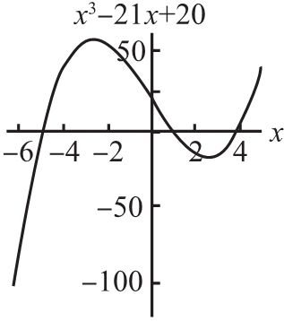
图 CQ-6
正如这些图所展示的，事实上，一个三次方程可能有一个、两个或三个实数解，但是不可能一个实数解也没有，而且实数解也不可能超过三个。我们根据处理二次方程的经验可以猜测，在大多数情形下，这个三次方程只有一个实数解，还有两个在图上看不出来的复数解。这个猜测是正确的。
※※※
事实上，下面是三次方程 的三个解：
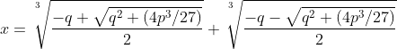
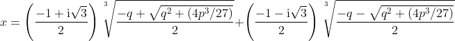
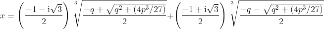
我需要对此稍微解释一下。事实上，我得对此详细解释一下。
首先，我们注意到每个解中两个立方根符号下面的项只有一处符号不同，一个是“+”，一个是“-”。如果你再仔细观察，你会发现这两项是下面这个二次方程的两个解：
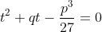
（在这里，我把
换成“哑变量”
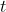
，以避免混淆两个变量。）为方便起见，我们把这两个解记为 和
和  。
。
接下来，第二个解和第三个解中出现的复数是 1 的立方根。当然，在实数范围内，1 只有一个立方根，就是它本身，因为 1×1×1=1；然而，在复数范围内，它还有另外两个复数立方根。你如果提前预习了第 6 章和第 7 章之间的“数学基础知识：单位根”就会知道，上面出现的第一个复数通常表示为  ，第二个复数表示为
，第二个复数表示为
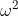
，每一个数都是另一个数的平方。现在，我可以非常简洁地写出一般三次方程的解。它们是
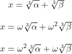
其中，
和
是 1 的复数立方根，而
和
是二次方程
的解。
※※※
请你再仔细观察一下上面的三个解，似乎第一个解是实数，而第二个和第三个解是复数。但是我们知道三次方程可能出现三个实数解（图 CQ-6），这是怎么回事？
问题在于
和
可能都是复数。它们两个都包含
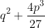
的平方根，而 可能是负数。如果它是负数，那么
和
就都是复数；如果它是正数，那么
和
就都是实数。它们都是复数的情况就是所谓的不可约情形
3
。此时，你就不得不求一个复数的立方根，这可不是一件容易的事。因此，三次方程的一般解尽管在理论上令人满意，但并不非常实用。
3 这是一个非常容易引起混淆的术语，所以最好限制在这个历史背景中使用。在更一般的方程理论中，一个不可约方程是指：如果不扩大数域，引入一个新的“俄罗斯套娃”，那么它就不能因式分解。（详见“数学基础知识：域论”。）对于三次方程
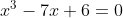
来说， 等于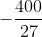
，所以这是“不可约情形”。然而多项式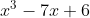
可以完全分解成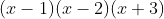
，所以，确切地说，它不是不可约的，只是中间过程中出现的二次方程 是不可约的。我将三个解的实际情况整理成下面的表格，它们与 的符号有关。我把 称为这个方程的判别式 （这样说恐怕有点儿不严谨）。表中的最下面一行是不可约情形。
| 第一个解 | 第二个解 | 第三个解 | |
| 判别式为正 | 实数 | 复数 | 复数 |
| 判别式为0 | 实数 | 相等的实数 | |
| 判别式为负 | 实数 | 实数 | 实数 |
如果判别式为 0，那么
和
相等，所以三个解被归结为
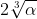
、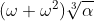
、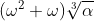
。显然，后两个解相等，很容易验证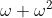
等于 -1。※※※
我在上面未加证明地给出了一般三次方程的求解公式。证明过程用现代字母符号体系写出来并不困难。为求解
，我们首先将
表示成两个数的和：
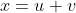
。当然，表示
的方法有无穷多种。此时，原来的三次方程变成 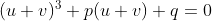
，重新整理后得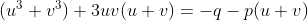
因为  和
和  的选择有无穷多种，所以，如果我可以选出特殊的
和
，满足
的选择有无穷多种，所以，如果我可以选出特殊的
和
，满足
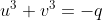
和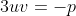
那么我就得到一个解。因为
，所以我可以用
和
表示
，然后再把它代回第一个方程
中，就得到下面的方程：
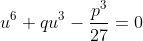
这是一个关于未知量
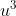
的二次方程。因为我还可以用
和
表示
，用同样的方法可以得到一个以
为变量的与上面的方程相同的方程，所以
和 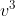
是上面这个二次方程的解。所以
和
就是这两个解的立方根，或者是这些立方根乘以 1 的立方根。所以原方程可能的解是 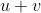
、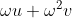
和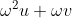
。（注意，类似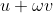
这样的组合不可能是解，因为要满足条件 ，这意味着加号两边的数相乘必须得到实数。当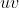
是实数时，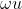
乘以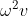
是实数，因为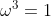
。）※※※
一般四次方程
的求解方法是降次法。同之前一样，我们通常将上面的方程简化或者“去掉某些项”，变成下面的形式：
通过一些简单的代换，这个方程可以被写成两个完全平方式的差。在求解过程中，你最终会得到一个三次方程：类似于将三次方程化归为二次方程的方法，可以把一个四次方程化归为一个三次方程。
这四个解是用包含
、
和  的平方根和立方根的表达式表示的。把这四个解完整地写出来会占用大量篇幅，所以我在这里只写出其中一个：
的平方根和立方根的表达式表示的。把这四个解完整地写出来会占用大量篇幅，所以我在这里只写出其中一个：
其中 ，并且
这个解看起来很吓人，但是它只包含算术过程：求平方根、立方根以及
、
和
的四则运算。我们已经看到，三次方程的一般解法比二次方程的一般解法复杂一些，而四次方程的一般解法又复杂了一些。
你可能由此猜测五次 方程的一般解法可能比它更复杂，或许需要整整一页纸甚至好几页纸才能把解全部写出来，但它的解也只是由平方根、立方根，可能还有五次方根以不同的方式互相嵌套而成的。根据求解二次方程、三次方程和四次方程的经验，这个猜测完全是合情合理的。但很可惜，这个猜测是错误的。